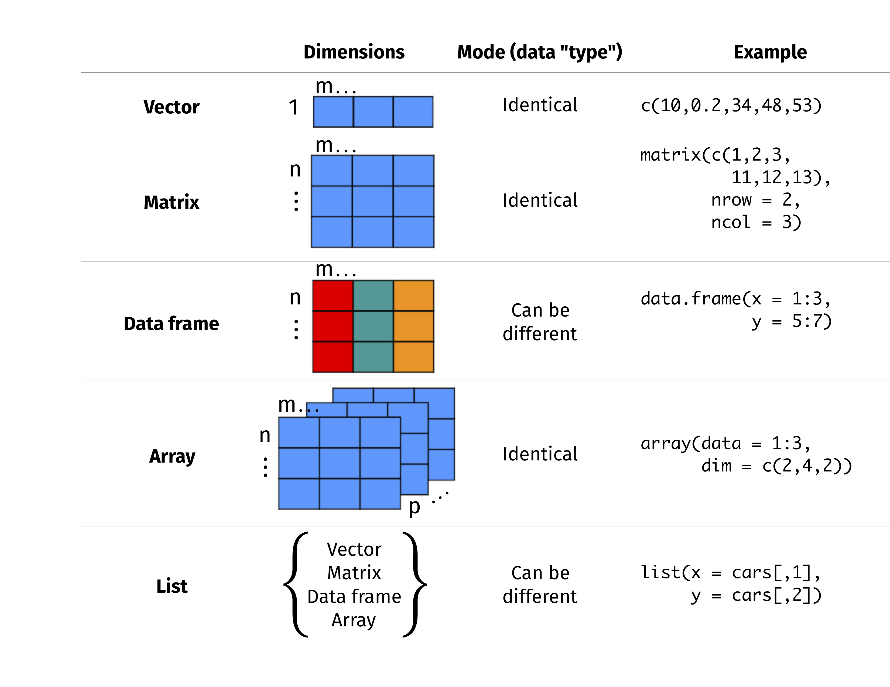

library(ggplot2)
data <- data.frame(
x = c(1, 2, 3, 4),
y = c(10, 20, 30, 40),
group = c("A", "A", "B", "B")
)
color_var <- "group"
ggplot(data, aes(x = x, y = y, color = !!as.name(color_var))) +
geom_point()
ggplot(data, aes(x = x, y = y, color = get(color_var))) +
geom_point()
ggplot(data, aes(x = x, y = y, color = !!sym(color_var))) +
geom_point()
ggplot(data, aes(x = x, y = y, color = .data[[color_var]])) +
geom_point()Data Structure

General Functions
.libPaths() # Show library paths
dir() # Show the directory
getwd() # Check working directory
setwd() # Change working directory
data() # Load built-in dataset
view() # View the entire dataset
tail() # Just show the last 6 rows
class() # Check the class of an R object
str() # Display internal structure of an R object
length() # Give length of a vector
dim() # View the number of rows and columns of a matrix or a data frame
names() # List names of variables in a data frame
set.seed() # Generate random number seed to make sure the results do not change.
ls() # list the variables in the workspace
rm() # remove the variable from workspace
rm(list = ls()) # remove all the variables from the workspace
list.files() # List the filename under specific directory
.libPaths() # R installation site
help(package="") # Check the functions of R library
system.file(package=“dagdata”) # Extract the location of package
colnames(installed.packages()) # list the installed packagesCoding Practice
- Variables = my_variable or myVariable
- Functions = RunThisStuffs() or run_this_stuffs()
- A function should not be longer than one screen
- Constants = CONSTANTS
- Use 4 spaces (and not tab) for indentations
- Always writing documentation above function definition
- Avoid using for loop, learn lapply and vector operations
- Never ever use hard-coded variables in functions
-
### ======to divide function blocks -
### ------to divide parts in a function - Name and style code consistently
-
rm(list =ls())andgc()to tidy up its memory - Don’t save a session history
- Keep track of
sessionInfo()in project folder - Use version control
Variable Repacement
Common method to do the variable replacement in ggplot2:
!!as.name()get()!!sym().data[[]]
VSCode Setup
// Add these to the remove settings
{
"r.alwaysUseActiveTerminal": true,
"r.bracketedPaste": true,
"r.helpPanel.cacheIndexFiles": "Global",
"r.plot.useHttpgd": true,
"r.rmarkdown.chunkBackgroundColor": "",
"r.rterm.option": [
"--no-save",
"--no-restore",
"--r-binary=/home/zhonggr/miniforge3/envs/renv/bin/R"
],
"r.rpath.linux": "/home/zhonggr/miniforge3/envs/renv/bin/R",
"r.rterm.linux": "/home/zhonggr/miniforge3/envs/renv/bin/radian"
}